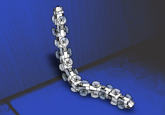

{kind=link}

Uno de los proyectos, a largo plazo, en los que estoy colaborando con Houxiang Zhang de la Universidad de Hamburgo (Alemania) y miembros del Robotics Institute de la Beihang University (China) es en el diseñoo de un gusano trepador.
Existen robots escaladores que tienen patas y ruedas pero no se han diseñado todavía ningún tipo de “orugas trepadoras”. La ventaja principal además de ser modulares, es que pueden modificar su forma para adaptarse mejor al terreno por el que trepan. Así por ejemplo, podrían subir por una pared e introducirse por tubos o conductos de aire para realizar tareas de mantenimiento e inspección entre otras.
Actualmente es un prototipo. Hemos publicado un artículo con las ideas y resultados obtenidos, pero todavía queda mucho por hacer:
A Novel Modular Climbing Caterpillar Using Low-frequency Vibrating Passive Suckers
Mi contribución a este proyecto son los algoritmos de locomoción. Estoy trabajando en ellos aplicándolos a gusanos modulares que se pueden mover sobre una superficie. La idea es reutilizarlos para funcionar en superficies verticales.
Durante mi estancia en Hamburgo, donde desarrollamos a Hypercube, hicimos algunos experimentos simples de locomoción sobre una pared.
{kind=link}

Para probar la viabilidad utilizamos velcro. Una tira la pusimos en la pared y la otra parte sobre las uniones entre los módulos. En la nueva versión estamos utilizando ventosas pasivas.
Juan, una curiosidad que acabo de encontrar:
http://xataka.com/2007/09/23-climbtron-rex-el-robot-escalador